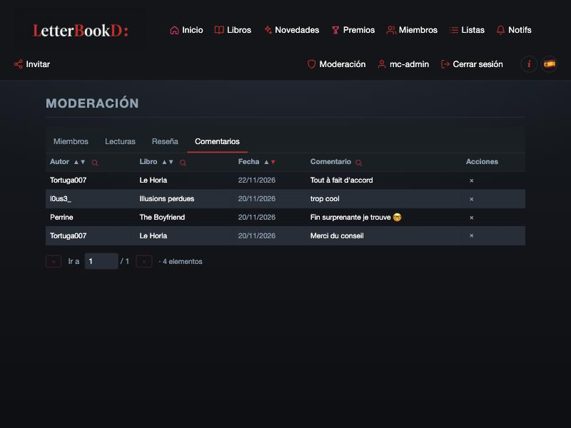

Moderación — Comentarios Solo administradores
Para qué sirve: Moderar las conversaciones anidadas bajo las reseñas. Un comentario inapropiado se retira aquí, de forma quirúrgica, sin afectar a la reseña padre ni a las demás respuestas del hilo.

Recorrido
Tabla: Autor (nombre de usuario del comentarista), Libro (libro cuya reseña contiene el comentario), Fecha, Comentario (extracto, ordenable y filtrable) y Acciones (cruz para eliminar). La eliminación de un comentario es atómica: los demás comentarios del mismo hilo se conservan.
Cadenas de acción
Cada fila describe un disparador en la interfaz, el modal o formulario que abre, y el efecto producido.
| Disparador | Modal / Campos | Efecto |
|---|---|---|
| Iconos de orden / filtro (lupa en la columna Comentario) | — | Misma mecánica. |
| Botón cruz (×) en una fila | Formulario POST de confirmación. | Elimina el comentario. El hilo sigue coherente (sin eliminación en cascada) y la reseña padre no se ve afectada. |